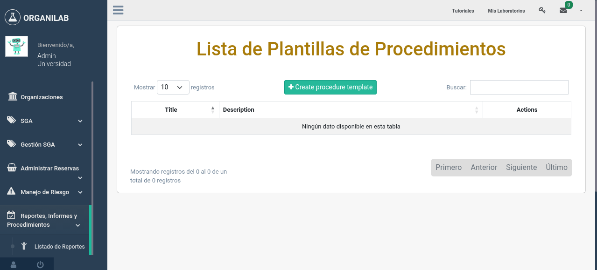
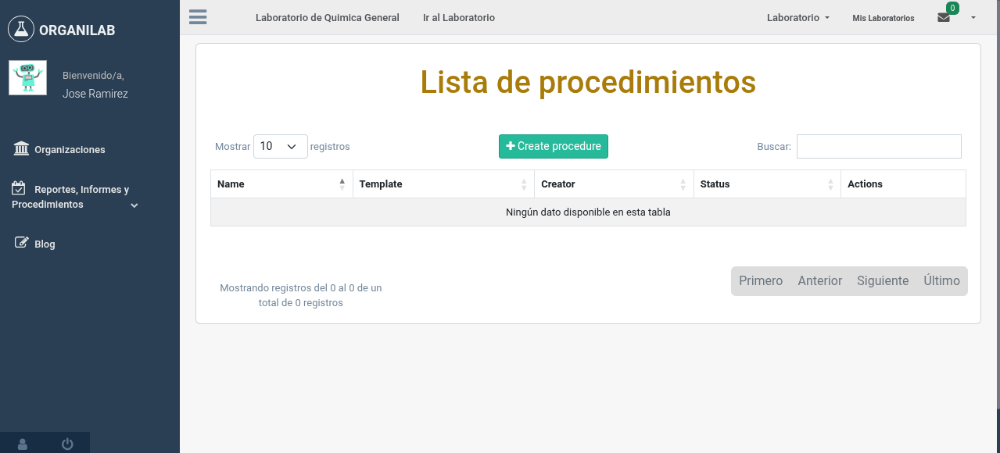

4. Ejecutar Procedimiento
Una vez que la plantilla del procedimiento está lista, puede crear una instancia de ejecución (MyProcedure) para un laboratorio específico. La instancia permite registrar datos mediante formularios dinámicos, agregar comentarios colaborativos y gestionar el flujo de estados hasta la finalización.
Crear una instancia de ejecución
Una instancia de ejecución es una copia de trabajo de la plantilla del procedimiento, vinculada a una organización específica. Para crear una nueva instancia:
- Navegue al listado de procedimientos disponibles en su organización.
- Seleccione la plantilla del procedimiento que desea ejecutar.
- Haga clic en "Crear Instancia" o "Ejecutar Procedimiento".
- Asigne un nombre personalizado a la instancia. Por ejemplo: "Preparación NaOH 1M - Laboratorio Química - 15 marzo 2026".
- La instancia se creará en estado Borrador y estará lista para ser completada.

Formulario para crear una nueva instancia de ejecución a partir de una plantilla
Flujo de estados de la instancia
La instancia de ejecución atraviesa tres estados. Solo los usuarios con los permisos adecuados pueden cambiar el estado de un procedimiento:
Formularios dinámicos (Formio.js)
Organilab utiliza Formio.js para generar formularios dinámicos asociados a cada
instancia de ejecución. Estos formularios se definen mediante un esquema JSON almacenado en el
campo schema de MyProcedure y permiten capturar datos estructurados durante la
ejecución del procedimiento.
Los formularios dinámicos pueden incluir campos como:
- Campos de texto: Para registrar observaciones y anotaciones.
- Campos numéricos: Para registrar mediciones (peso, volumen, temperatura, pH).
- Casillas de verificación: Para confirmar que un paso se completó correctamente.
- Selectores de fecha y hora: Para registrar el momento exacto de cada acción.
- Campos de carga de archivos: Para adjuntar fotografías o documentos de soporte.
Formulario dinámico generado con Formio.js durante la ejecución de un procedimiento
Comentarios colaborativos por paso
El modelo CommentProcedureStep permite que múltiples usuarios agreguen comentarios a cada paso durante la ejecución. Esta funcionalidad es especialmente útil para:
- Registrar incidencias o desviaciones observadas durante la ejecución.
- Documentar decisiones tomadas en tiempo real.
- Permitir que supervisores hagan retroalimentación sin modificar los datos originales.
- Mantener un registro de comunicación entre el operador y el revisor.
- Navegue al paso del procedimiento donde desea agregar un comentario.
- En la sección de comentarios, escriba su observación o retroalimentación.
- Haga clic en "Agregar Comentario". El comentario quedará registrado con su nombre de usuario y la fecha y hora.

Sección de comentarios colaborativos en un paso del procedimiento en ejecución
Cambiar el estado del procedimiento
- Verifique que todos los pasos estén completos y que los formularios dinámicos tengan los datos requeridos.
- Desde la vista de la instancia, haga clic en "Enviar a Revisión" para cambiar el estado de Borrador a En Revisión.
- El supervisor revisa la instancia y puede hacer clic en "Aprobar" para finalizar el procedimiento o "Rechazar" para devolverlo a Borrador.